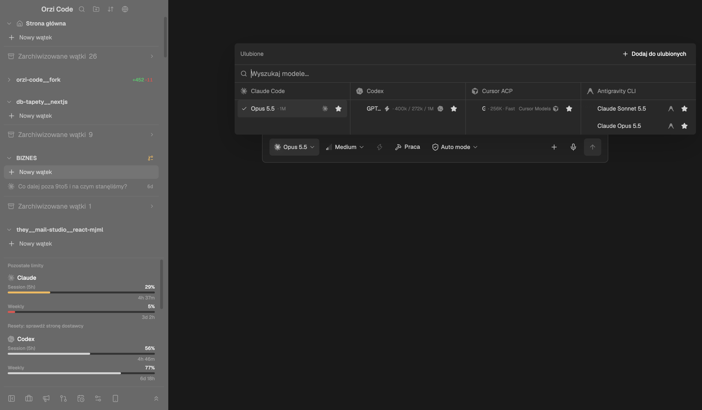
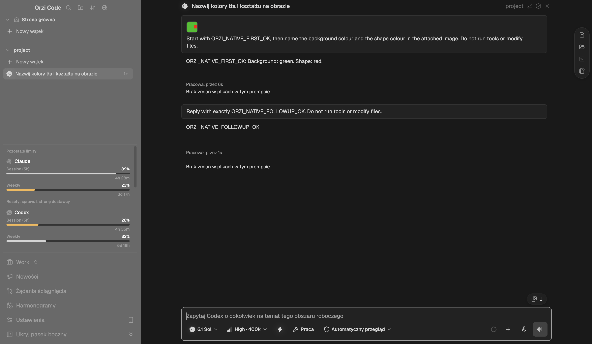

Wątek - główny widok
Ten sam układ co dziś, z mniejszą liczbą elementów. Sidebar ma tylko nawigację po wątkach, limity zwijają się do jednej linii, a narzędzia wątku przechodzą do nagłówka. Najedź na wiersze, żeby zobaczyć akcje pokazywane dopiero po najechaniu.
- Górny pasek sidebaru - bez napisu "Orzi Code" i czterech ikon. Zostają: zwiń sidebar i szukaj. Import projektu i sortowanie przechodzą do menu "+" przy sekcji Projekty i do selektora projektu.
- Jeden "Nowy wątek" na górze, ze skrótem. Znikają powtórzenia "Nowy wątek" pod każdym projektem.
- Projekty - tylko te z niearchiwizowanymi wątkami. "+" przy nazwie projektu pojawia się dopiero po najechaniu. Ikony folderów i chevronów jak w Cursorze.
- Wiersz wątku - ikona dostawcy w kolorze marki, tytuł, po prawej jedna informacja: spinner, diff albo wiek. Diff zamienia się na czas po najechaniu.
- Jedno Archiwum zamiast "Zarchiwizowane wątki" pod każdym projektem. Otwiera widok w obszarze głównym (zakładka Archiwum).
- Limity zwinięte do jednej linii: najniższy pozostały % na dostawcę. Kliknij, żeby rozwinąć (zakładka Limity). Stan zwinięcia jest zapamiętywany.
- Stopka - przełącznik profilu i ikony Nowości / PR / Harmonogramy / Ustawienia z tooltipami, zamiast listy 6 wierszy tekstu.
- Nagłówek wątku przejmuje pływającą szynę narzędzi z prawej krawędzi (zmiany, terminal, pliki). Projekt jako cichy chip.
- Wiadomość użytkownika - lżejsza karta, obraz 96 x 80 zgodnie z DESIGN.md.
- Meta tury w jednej linii: "6 s · bez zmian w plikach" zamiast dwóch osobnych wierszy "Pracował przez 6s" i "Brak zmian w plikach w tym prompcie".
- Model i wysiłek w jednej pigułce ("6.1 Sol High"). Fast i rozmiar kontekstu przechodzą do dropdownu modelu (zakładka Dropdown modeli).
- Tryb uprawnień jako ikona z tooltipem i menu, zamiast długiego "Automatyczny przegląd". Kontekst jako mały pierścień zamiast tekstu.
Nowy wątek - pusty sidebar i wybór projektu w composerze
Workflow z wymagań: pusty sidebar, projekt wybierany nad polem wiadomości, po pierwszym prompcie wątek pojawia się w folderze projektu po lewej.
- Pusty stan zamiast listy wszystkich dodanych projektów. Projekty bez aktywnych wątków nadal są w selektorze.
- Kontekst nad polem jak w Cursorze: projekt, gałąź, tryb worktree. Dziś te kontrolki są rozrzucone po nagłówku draftu.
- Załączniki pod jedną ikoną. Drag and drop i wklejanie bez zmian.
Dropdown modeli - węższe kolumny, nazwa nigdy nie jest ucinana przez kontekst
Kolumny mają 184-216 px zamiast rozciągania na całą szerokość okna. Nazwa modelu ma pierwszeństwo: przy braku miejsca najpierw znika metadana. Najedź na wiersz, żeby zobaczyć gwiazdkę.
- Wyszukiwarka zamiast nagłówka "Ulubione". Wpisanie tekstu szuka też poza ulubionymi, więc osobny przycisk "Dodaj do ulubionych" na górze nie jest potrzebny.
- Wiersz: znacznik wyboru, nazwa, jedna wartość kontekstu. Zamiast "400k / 272k / 1M" pokazujemy domyślny kontekst, a pełną listę w tooltipie. Znika powtórzona ikona dostawcy w wierszu i ikona Fast. Gwiazdka tylko po najechaniu, w miejscu metadanej.
- Kolumny według subskrypcji, nagłówek z kolorowym znakiem marki. Kolumna ma szerokość treści (184-216 px), więc menu ma ok. 820 px zamiast całej szerokości okna.
- Stopka: "+ Dodaj model" otwiera katalog. Wysiłek i Fast przechodzą tutaj z paska composera, bo dotyczą wybranego modelu. Pokazywane tylko gdy model je deklaruje.
Dziś

Limity - zwinięte i rozwinięte
Dziś limity zajmują ok. 40% wysokości sidebaru. Propozycja: domyślnie jedna linia, po rozwinięciu jeden wiersz na okno limitu.
- Jedna linia: znak marki + najniższy pozostały procent na dostawcę. Kolor procentu robi się bursztynowy / czerwony przy niskim stanie.
- Wiersz na okno: etykieta, pasek 3 px, % pozostały, czas do resetu. Dziś każde okno to 3 wiersze (etykieta+%, pasek, czas). Nazwa planu (Max / Plus) zamiast nagłówka "Pozostałe limity".
- Kolory marek tylko na znakach dostawców. Paski zachowują semantykę: neutralny / bursztynowy / czerwony. Codex i Cursor mają monochromatyczne logotypy, więc zostają jasne.
Archiwum - jeden folder, podfoldery projektów
Archiwum otwiera się w obszarze głównym, bo jest używane rzadko i nie powinno zajmować miejsca w sidebarze. Najedź na wiersz, żeby zobaczyć akcje.
Archiwum 36
- Wyszukiwanie w całym archiwum, przez wszystkie projekty.
- Podfolder na projekt, zwijany, z licznikiem. Projekty bez aktywnych wątków są tylko tutaj.
- Kliknięcie otwiera wątek tylko do odczytu. "Przywróć" pojawia się po najechaniu i przenosi wątek z powrotem do sidebaru.
Przed / po, tokeny i otwarte pytania
Zrzuty z ostatniego QA pakietu (11.10). Wartości Cursora odczytane z
Cursor.app/.../theme-cursor/themes/cursor-dark-color-theme.json.

vibrancy: "sidebar") i
prześwituje tapeta. Limity i 6 wierszy nawigacji zajmują ponad połowę wysokości. Szyna
narzędzi pływa przy prawej krawędzi.
Tokeny ciemnego motywu
| Rola | Dziś (Orzi Code) | Cursor Dark | Wybrane: Czysta czerń |
|---|---|---|---|
| Sidebar |
#232323 + vibrancy
(na ekranie ok. #6b6b6b)
|
#141414 |
#000000, bez vibrancy
|
| Obszar główny | #191919 |
#181818 |
#050505 |
| Karty, composer, menu | #232323 |
ok. #1f1f1f |
#121212 |
| Obrys |
#3d3d3d (pełny)
|
#F0F0F013 (7,5% bieli) |
podziały sekcji .17, wewnętrzne .10, composer / menu
.18
|
| Tekst / drugorzędny / trzeciorzędny | #d4d4d4 / mieszane |
#F0F0F0 |
#f0f0f0 / 62% / 38% |
| Hover / zaznaczenie | szare tła | #F0F0F011 / #F0F0F01E |
6% / 10% bieli |
Pokrycie wymagań z redesign-requirements.md (uzupełnienie 11.10)
| Wymaganie | Gdzie w podglądzie |
|---|---|
| Rozdzielenie obszarów UI, mniej chaosu w sidebarze | Wątek #1-#7 |
| Ikony folderów, rozwijania i zwijania jak w Cursorze | Wątek #3, Archiwum #2 (Lucide, linia 1,6 px, chevron obracany o 90°) |
| Sidebar tylko z projektami z niearchiwizowanymi chatami, pusty start | Nowy wątek #1, #2 |
| Jedno Archiwum z podfolderami projektów, przywracanie | Archiwum #1-#3 |
| Firmowe kolory logotypów w limitach | Limity #3 |
| Zwijanie listy limitów | Limity #1, #2 |
| Ulubione w kolumnach subskrypcji, reszta pod plusem | Dropdown modeli #1-#4 |
| Większe zdjęcia w inpucie (96 x 80) | Wątek #9 |
Decyzje (11.10)
-
Czysta czerń: sidebar
#000000, obszar główny#050505, karty i menu#121212. Wyraźniejsze obrysy: podziały sekcji (sidebar / chat, nagłówek, limity, stopka) 17% bieli, obrysy wewnętrzne 10%, composer i menu 18%. - Vibrancy macOS wyłączone.
- Wysiłek i Fast w stopce dropdownu modelu. Domyślny wysiłek: High.
- Codex i Cursor zostają z monochromatycznymi znakami.
- Bez jasnego motywu i bez prac nad innymi motywami. Jeden ciemny motyw.